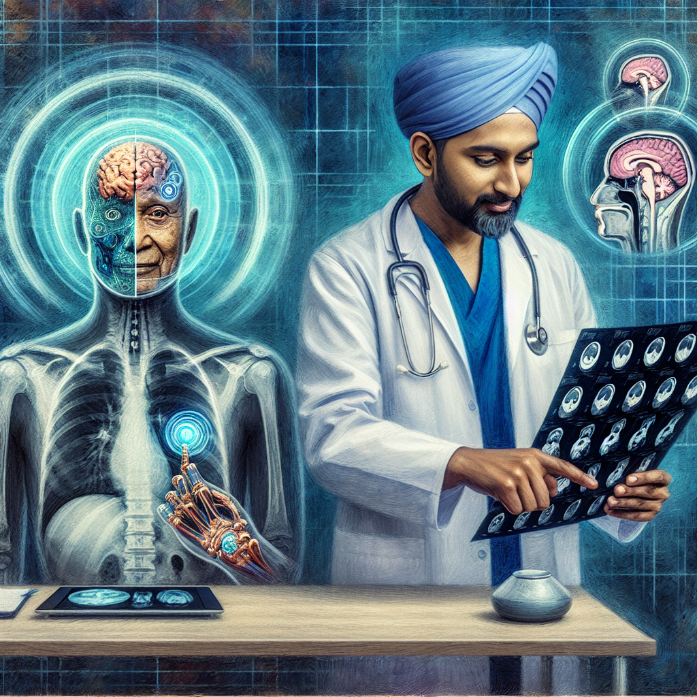

Why AI will never replace the radiologist
As advancements in artificial intelligence (AI) and machine learning continue to reshape various fields, the realm of radiology stands at a critical juncture. While it is undeniable that AI can enhance diagnostic processes and improve efficiency, I firmly believe that it will never fully replace the radiologist. Here’s why.
First and foremost, radiology is not just about image interpretation; it is a highly nuanced specialty that requires a deep understanding of human anatomy, disease processes, and the context of each patient’s clinical history. Radiologists are trained to integrate information from a multitude of sources—patient symptoms, lab results, and the specifics of imaging studies—before arriving at a diagnosis. This holistic approach is something that AI, despite its impressive capabilities, struggles to replicate.
Moreover, the practice of radiology involves a level of critical thinking and judgment that extends beyond pattern recognition. Radiologists often encounter ambiguous cases where the imaging findings do not clearly point to a definitive diagnosis. In such scenarios, human intuition and experience play a crucial role in guiding decision-making. AI systems, while they can identify patterns in vast datasets, often lack the ability to apply clinical reasoning in complex situations.
Another significant aspect is the importance of patient interaction. Radiologists frequently collaborate with referring physicians to provide insights and recommendations based on imaging results. This communication is essential for patient care, as it helps ensure that the right treatment plans are developed. AI lacks the emotional intelligence and interpersonal skills necessary for these interactions, which are critical in fostering trust and understanding between healthcare providers and patients.
Additionally, the ethical implications of relying solely on AI in radiology cannot be overlooked. The use of machine learning algorithms raises questions about accountability and transparency. If an AI system makes an error in diagnosis, it can be challenging to determine responsibility. Radiologists bring a human element to the practice, understanding the ethical considerations of patient care and the need for informed consent, which AI systems cannot address.
Furthermore, the technology itself is still in its infancy. While AI can assist in identifying certain abnormalities with impressive accuracy, it is not infallible. There are numerous cases where AI has misclassified images or failed to detect critical findings. The potential for bias in training datasets also poses a risk, as it could lead to disparities in care if AI tools are not carefully monitored and validated.
In conclusion, while AI will undoubtedly continue to augment the field of radiology by improving efficiency and supporting radiologists in their work, it is unlikely to replace them altogether. The combination of advanced technology and human expertise will create a more effective healthcare environment. Radiologists will continue to play a vital role in patient care, leveraging AI as a powerful tool rather than allowing it to overshadow their indispensable contributions to medicine.